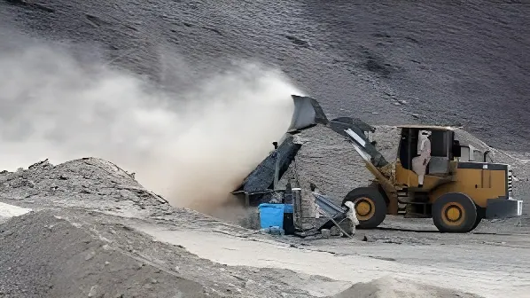

Dans la nuit du mardi 15 au mercredi 16 septembre 2026, les puits de la mine artisanale d'Al-Zaraa, près d'Al-Nahud, dans le Kordofan occidental, se sont effondrés les uns sur les autres. Selon une source au sein des Forces de soutien rapide (FSR), qui contrôlent la zone, le bilan s'est alourdi tout au long de la journée de mercredi pour atteindre au moins 82 morts et une cinquantaine de blessés, avec un nombre indéterminé de personnes encore prisonnières sous les décombres.
L'accident s'est produit sur le site d'Al-Zaraa, une mine d'or artisanale située près de la ville d'Al-Nahud, dans l'État du Kordofan occidental, une région soudanaise sous le contrôle des paramilitaires des Forces de soutien rapide (FSR). Selon plusieurs rescapés, les puits d'extraction y sont creusés côte à côte, sans étaiement ni norme de sécurité : lorsque l'un d'eux a cédé mardi 15 septembre, l'effondrement s'est propagé aux galeries voisines, ensevelissant les mineurs qui s'y trouvaient.
Le bilan a évolué rapidement d'une source à l'autre à mesure que les secours progressaient : environ 60 morts recensés à l'aube de mercredi, puis 82 en fin de journée selon la source FSR citée par l'AFP, quand d'autres médias évoquaient encore un bilan compris entre 60 et 67 morts. Cette divergence illustre la difficulté à établir un bilan fiable dans une zone reculée, en pleine guerre, où l'accès des secours reste très limité.
Effondrement en chaîne des puits de la mine artisanale d'Al-Zaraa, dans le Kordofan occidental. Les mineurs présents sur place organisent les premiers secours avec des moyens rudimentaires.
Les corps de 60 victimes sont extraits des décombres après une nuit de recherches, selon des rescapés cités par l'AFP et Reuters.
22 corps supplémentaires sont retrouvés ; une source au sein des FSR porte le bilan à au moins 82 morts et fait état d'une cinquantaine de blessés.
Les opérations de recherche se poursuivent avec des moyens rudimentaires ; un nombre indéterminé de personnes resteraient prisonnières sous les décombres.
La grande majorité de l'or extrait au Soudan provient de ce type d'exploitations informelles, où les mineurs travaillent à la main, avec des outils rudimentaires, pour des salaires journaliers modestes. Ils manipulent souvent du cyanure et d'autres produits toxiques pour séparer le métal précieux du minerai, sans équipement de protection ni contrôle sanitaire. Les accidents mortels y sont récurrents : en janvier 2026 déjà, l'effondrement d'une autre mine d'or, dans le Kordofan du Sud voisin, avait tué 13 mineurs et blessé six personnes. La société publique Sudanese Mineral Resources Company avait alors annoncé un programme de sécurisation des puits abandonnés, sans empêcher ce nouveau drame.
Cette ruée vers l'or s'explique en grande partie par l'effondrement de l'économie soudanaise depuis le début de la guerre, en avril 2023, entre l'armée régulière et les FSR. Selon l'ONU, près de 20 millions de personnes sont aujourd'hui confrontées à une insécurité alimentaire aiguë dans le pays, poussant de nombreux jeunes hommes vers l'orpaillage artisanal comme unique source de revenus.
Troisième plus grand pays d'Afrique par sa superficie, le Soudan figure parmi les principaux producteurs d'or du continent. La Sudanese Mineral Resources Company a fait état d'une production de 70 tonnes en 2025, un niveau record depuis cinq ans. Plus de deux millions de personnes travailleraient dans l'exploitation artisanale, qui représenterait plus de 80 % de la production nationale d'or — une activité aussi vitale pour l'économie du pays que dangereuse pour ceux qui en vivent.
| Repère | Chiffre | Statut |
|---|---|---|
| Bilan (16 sept., source FSR) | ≥ 82 morts, ≈ 50 blessés | Provisoire |
| Production d'or du Soudan (2025) | 70 tonnes | Confirmé (SMRC) |
| Mineurs artisanaux au Soudan | > 2 millions | Estimation (secteur) |
| Précédent (Kordofan du Sud, janv. 2026) | 13 morts | Confirmé |
| Insécurité alimentaire aiguë au Soudan | ≈ 20 millions de personnes | Estimation ONU |
Ce nouvel effondrement n'est pas un accident isolé : c'est le symptôme d'un pays où la guerre a détruit l'économie formelle et poussé des millions de Soudanais vers des puits creusés à la main, sans normes ni contrôle, pour extraire un métal qui finance dans le même temps les belligérants. Les sanctions occidentales annoncées cet été visent le nerf de la guerre, pas la sécurité des mineurs — et rien, pour l'instant, ne dit que ce drame sera le dernier tant que la ruée vers l'or artisanal restera l'un des seuls recours face à l'effondrement du pays.